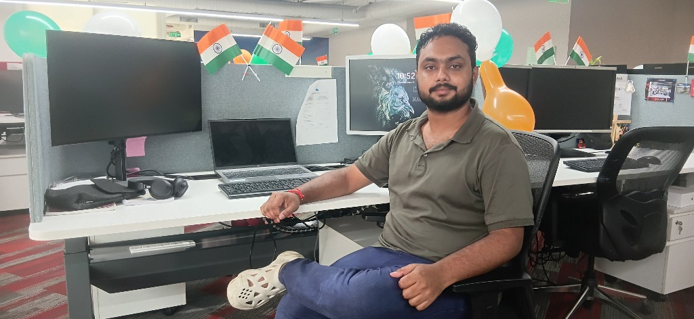

|
Building intelligent, scalable systems at Keysight R&D — working with Lockheed Martin, Boeing & Emirates.
About Me

I'm an Applied AI Engineer at Keysight Technologies R&D, where I architect intelligent systems for enterprise clients including Lockheed Martin, Boeing, and Emirates.
My expertise lies at the intersection of AI/ML, cloud-native architecture, and backend engineering. I specialize in building Retrieval-Augmented Generation (RAG) applications, multi-agent workflows, and high-performance distributed systems.
With a Master's in Signal & Image Processing (AI) from NIT Rourkela, I bring deep technical knowledge to every challenge, from optimizing LLM reliability to designing scalable cloud infrastructure.
Technical Arsenal
Career Journey
Keysight Technologies
📍 Gurugram, India | Clients: Lockheed Martin, Boeing, Emirates
AMETEK Mocon (USA BU)
📍 Bengaluru, India
Featured Work
Architected and deployed an enterprise-grade RAG system over 500+ complex hardware documents, reducing engineering manual search time by 70% and ensuring verifiable source grounding to mitigate LLM hallucinations.
Designed a Hybrid Search Architecture merging dense semantic retrieval (Qdrant, HNSW/ANN) with sparse BM25 keyword matching (SQLite FTS5), improving retrieval precision by 35% over semantic-only baselines.
Packaged the full AI stack into a 950 MB standalone portable executable (Streamlit, ONNX runtime, Qdrant), eliminating cloud SaaS dependencies and saving $5,000+ annually.
Developed a CNN-based medical image classification pipeline in PyTorch to detect and classify brain tumors (glioma, meningioma, pituitary) from MRI scans, achieving 96%+ test accuracy.
Leveraged ResNet-50 transfer learning, advanced data augmentation, and hyperparameter tuning, integrated with a custom validation suite and Grad-CAM explainability visualizations.
Deployed the inference pipeline via FastAPI and Docker, integrating end-to-end experiment tracking and model versioning with MLflow.
Engineered an agentic AI career copilot that plans, remembers, executes, and validates every step of the job search lifecycle autonomously.
Designed a multi-agent orchestration swarm using LangGraph coupled with a browser automation execution layer powered by Playwright and background workers.
Built a secure Next.js frontend powered by a Postgres, pgvector, and Redis memory stack, featuring OAuth2/JWT security, Stripe payments, and OpenTelemetry observability.
Services Offered
Academic Background
Let's Connect
Whether you have a project idea, a collaboration proposal, or just want to say hello — I'd love to hear from you.